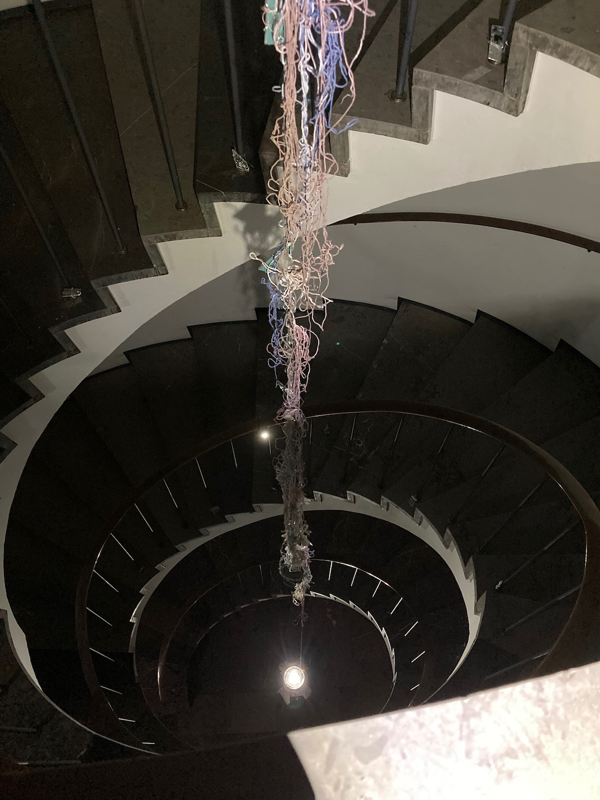
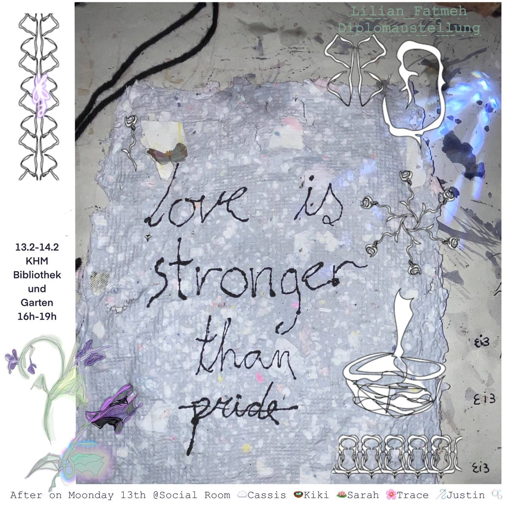
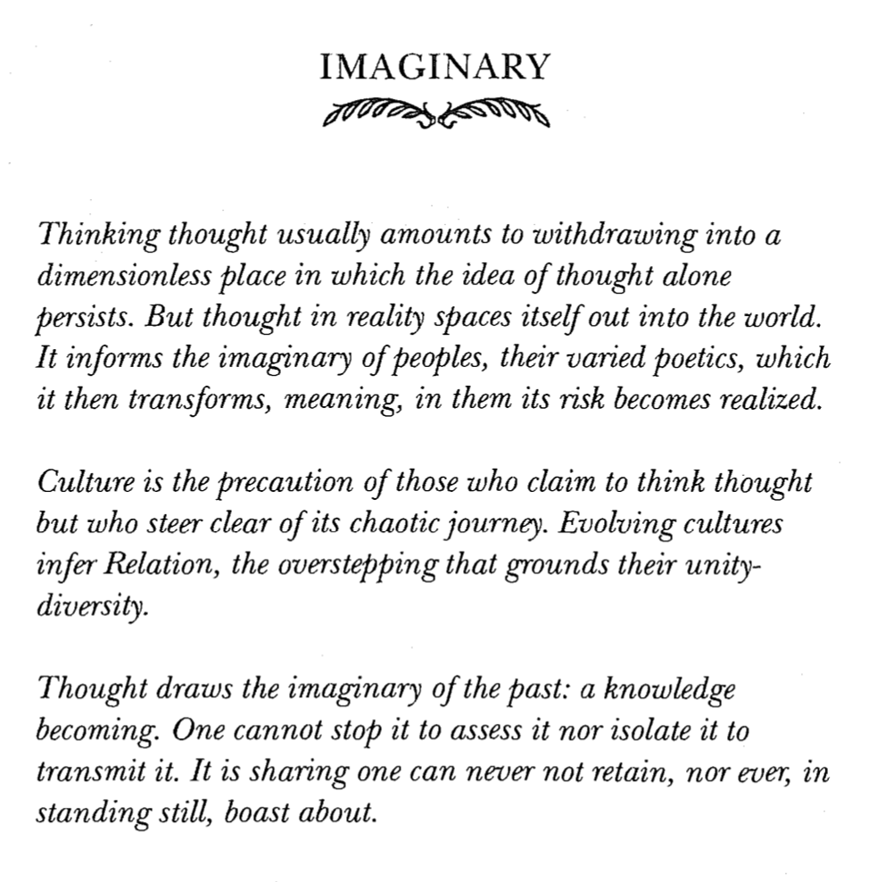
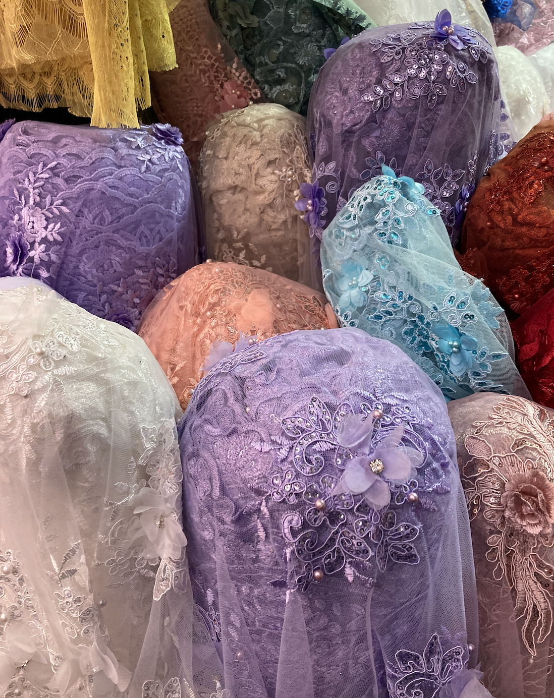

04.23
https://www.youtube.com/watch?v=D4ojYQr2WXk
https://feminisms.co/en
a divide comedy - florentina holzinger
03.23
https://arxiv.org/abs/2304.05279
https://thenewinquiry.com/conversacion-los-abajocomunes/
https://www.youtube.com/watch?v=EW1aR3rHeZE
https://www.youtube.com/watch?v=6OhBCaewe2I
02.23

🫰🏼🫰🏼🌺🌺

autobiografía del algodón - cristina rivera garza
https://stroomtv.bandcamp.com/track/camden

12.22-01.23
yo soy el monstruo que os habla - paul b. preciado
on difference without separability - denise ferreira da silva. link
on touching - the inhuman that therefore i am - karen barad. link
ch’ixinakax utxiwa: una reflexión sobre prácticas y discursos descolonizadores - silvia rivera cusicanqui. link (english)
nadie me verá llorar - cristina rivera garza
